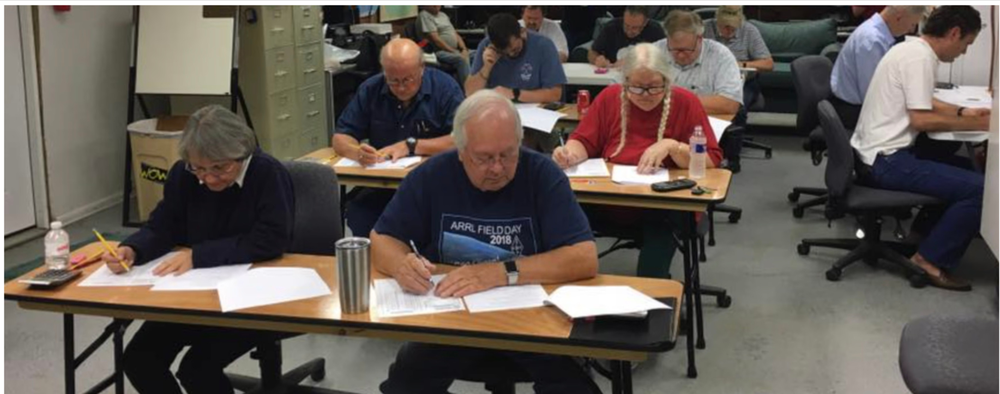
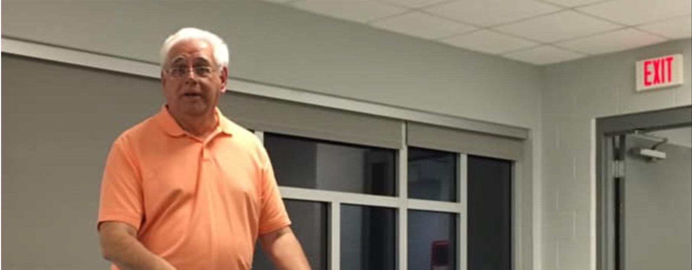
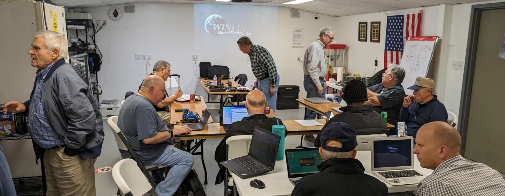
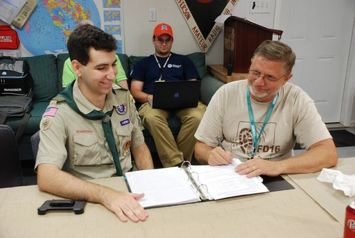

License Training & Examinations
Jefferson ARC offers license examinations under the auspices of the FCC. We occasionally offer and “all-in-a-day” session. New hams can learn all they need to know for their Technician Class license in one day and take the exam at the end of the session.
Get Your License Now
Monthly Talks
At monthly talks, our members are introduced to many fascinating and relevant topics. These talks are often given by specialists from other parts of the country, sometimes over video meetings, or by experienced members.
Past topics have included:
- Lightning protection
- Antenna construction
- and International contesting

Past Special Sessions
Throughout the years, we offer special training sessions that provide in-depth knowledge about different aspects of the hobby.
Here's your chance to learn more about topics such as:
- Radio-based texting and email
- Using repeaters in orbiting satellites
- Talking with the International Space Station
- Helping scientists gather info about solar activity

Public Education
We focus on continuing education for members who want to get more advanced licenses. We host an all-in-a-day session where new users can learn all they need for the Technician license in one day and take the exam at the end of the session. We provide training for Scouts organizations to support Radio Merit Badges.
Public Education
Educational Materials
When an event produces useful educational materials, we store that on our website and make it available publicly. This material includes member and guest speaker slides, designs for antennas we build at the club, detailed technical information we learn about equipment we need to install, etc.
When you click “More Info” below, you will see a page with a “Sign in” button. You can ignore this.
Educational Materials
Additional Resources
Of course, the Internet has endless amounts of information about all aspects of amateur radio. Some of it is great, some not so great, and some out-of-date. We try to keep an up-to-date curation of materials on the Internet that members have found beneficial.
Additional Resources